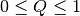

Mesh¶
- class Mesh(*args)¶
GeFEM Mesh object
This object is able to store any element in any dimension even if you mix elements with different dimensions.
General constructor for Mesh objects
M = Mesh('empty', int dim) Create a new empty mesh.
M = Mesh('cartesian', vec X[, vec Y[, vec Z,..]]) Build quickly a regular mesh of quadrangles, cubes, etc.
M = Mesh('pyramidal', vec X[, vec Y[, vec Z,..]]) Build quickly a regular mesh of pyramids, etc.
M = Mesh('cartesian Q1', vec X, vec Y[, vec Z,..]) Build quickly a regular mesh of quadrangles, cubes, etc. with Q1 elements.
M = Mesh('triangles grid', vec X, vec Y) Build quickly a regular mesh of triangles.
This is a very limited and somehow deprecated function (See also Mesh('ptND'), Mesh('regular simplices') and Mesh('cartesian')).
M = Mesh('regular simplices', vec X[, vec Y[, vec Z,...]]['degree', int k]['noised']) Mesh a n-dimensionnal parallelepipeded with simplices (triangles, tetrahedrons etc) .
The optional degree may be used to build meshes with non linear geometric transformations.
M = Mesh('curved', Mesh m, vec F) Build a curved (n+1)-dimensions mesh from a n-dimensions mesh m.
The points of the new mesh have one additional coordinate, given by the vector F. This can be used to obtain meshes for shells. m may be a MeshFem object, in that case its linked mesh will be used.
M = Mesh('prismatic', Mesh m, int nl[, int degree]) Extrude a prismatic Mesh M from a Mesh m.
In the additional dimension there are nl layers of elements distributed from 0 to 1. If the optional parameter degree is provided with a value greater than the default value of 1, a non-linear transformation of corresponding degree is considered in the extrusion direction.
M = Mesh('pt2D', mat P, imat T[, int n]) Build a mesh from a 2D triangulation.
Each column of P contains a point coordinate, and each column of T contains the point indices of a triangle. n is optional and is a zone number. If n is specified then only the zone number n is converted (in that case, T is expected to have 4 rows, the fourth containing these zone numbers).
M = Mesh('ptND', mat P, imat T) Build a mesh from a n-dimensional “triangulation”.
Similar function to ‘pt2D’, for building simplexes meshes from a triangulation given in T, and a list of points given in P. The dimension of the mesh will be the number of rows of P, and the dimension of the simplexes will be the number of rows of T.
M = Mesh('load', string filename) Load a mesh from a getfem++ ascii mesh file.
See also Mesh.save(string filename).
M = Mesh('from string', string s) Load a mesh from a string description.
For example, a string returned by Mesh.char().
M = Mesh('import', string format, string filename) Import a mesh.
format may be:
- ‘gmsh’ for a mesh created with Gmsh
- ‘gid’ for a mesh created with GiD
- ‘cdb’ for a mesh created with ANSYS
- ‘am_fmt’ for a mesh created with EMC2
M = Mesh('clone', Mesh m2) Create a copy of a mesh.
M = Mesh('generate', MesherObject mo, scalar h[, int K = 1[, mat vertices]]) Call the experimental mesher of Getfem on the geometry represented by mo. please control the conformity of the produced mesh. You can help the mesher by adding a priori vertices in the array vertices which should be of size n x m where n n is the dimension of the mesh and m the number of points. h is approximate diameter of the elements. K is the degree of the mesh ( > 1 for curved boundaries). The mesher try to optimize the quality of the elements. This operation may be time consuming. Note that if the mesh generation fails, because of some random procedure used, it can be run again since it will not give necessarily the same result due to random procedures used. The messages send to the console by the mesh generation can be desactivated using gf_util(‘trace level’, 2). More information can be obtained by gf_util(‘trace level’, 4). See MesherObject to manipulate geometric primitives in order to desribe the geometry.
- add_convex(GT, PTS)¶
Add a new convex into the mesh.
The convex structure (triangle, prism,...) is given by GT (obtained with GeoTrans(‘...’)), and its points are given by the columns of PTS. On return, CVIDs contains the convex #ids. PTS might be a 3-dimensional array in order to insert more than one convex (or a two dimensional array correctly shaped according to Fortran ordering).
- add_point(PTS)¶
Insert new points in the mesh and return their #ids.
PTS should be an nxm matrix , where n is the mesh dimension, and m is the number of points that will be added to the mesh. On output, PIDs contains the point #ids of these new points.
Remark: if some points are already part of the mesh (with a small tolerance of approximately 1e-8), they won’t be inserted again, and PIDs will contain the previously assigned #ids of these points.
- adjacent_face(cvid, fid)¶
Return convex face of the neighbour element if it exists. If the convex have more than one neighbour relativley to the face f (think to bar elements in 3D for instance), return the first face found.
- boundaries()¶
DEPRECATED FUNCTION. Use ‘regions’ instead.
- boundary()¶
DEPRECATED FUNCTION. Use ‘region’ instead.
- char()¶
Output a string description of the mesh.
- convex_area(CVIDs=None)¶
Return an estimate of the area of each convex.
- convex_radius(CVIDs=None)¶
Return an estimate of the radius of each convex.
- curved_edges(N, CVLST=None)¶
[OBSOLETE FUNCTION! will be removed in a future release]
More sophisticated version of Mesh.edges() designed for curved elements. This one will return N (N>=2) points of the (curved) edges. With N==2, this is equivalent to Mesh.edges(). Since the points are no more always part of the mesh, their coordinates are returned instead of points number, in the array E which is a [ mesh_dim x 2 x nb_edges ] array. If the optional output argument C is specified, it will contain the convex number associated with each edge.
- cvid()¶
Return the list of all convex #id.
Note that their numbering is not supposed to be contiguous from 0 to Mesh.nbcvs()-1, especially if some points have been removed from the mesh. You can use Mesh.optimize_structure() to enforce a contiguous numbering.
- cvid_from_pid(PIDs, share=False)¶
Search convex #ids related with the point #ids given in PIDs.
If share=False, search convex whose vertex #ids are in PIDs. If share=True, search convex #ids that share the point #ids given in PIDs. CVIDs is a vector (possibly empty).
- cvstruct(CVIDs=None)¶
Return an array of the convex structures.
If CVIDs is not given, all convexes are considered. Each convex structure is listed once in S, and CV2S maps the convexes indice in CVIDs to the indice of its structure in S.
- del_convex(CVIDs)¶
Remove one or more convexes from the mesh.
CVIDs should contain the convexes #ids, such as the ones returned by the ‘add convex’ command.
- del_convex_of_dim(DIMs)¶
Remove all convexes of dimension listed in DIMs.
For example; Mesh.del_convex_of_dim([1,2]) remove all line segments, triangles and quadrangles.
- del_point(PIDs)¶
Removes one or more points from the mesh.
PIDs should contain the point #ids, such as the one returned by the ‘add point’ command.
- delete_boundary(rnum, CVFIDs)¶
DEPRECATED FUNCTION. Use ‘delete region’ instead.
- delete_region(RIDs)¶
Remove the regions whose #ids are listed in RIDs
- dim()¶
Get the dimension of the mesh (2 for a 2D mesh, etc).
- display()¶
displays a short summary for a Mesh object.
- edges(CVLST=None, *args)¶
Synopsis: [E,C] = Mesh.edges(self [, CVLST][, ‘merge’])
[OBSOLETE FUNCTION! will be removed in a future release]
Return the list of edges of mesh M for the convexes listed in the row vector CVLST. E is a 2 x nb_edges matrix containing point indices. If CVLST is omitted, then the edges of all convexes are returned. If CVLST has two rows then the first row is supposed to contain convex numbers, and the second face numbers, of which the edges will be returned. If ‘merge’ is indicated, all common edges of convexes are merged in a single edge. If the optional output argument C is specified, it will contain the convex number associated with each edge.
- export_to_dx(filename, *args)¶
Synopsis: Mesh.export_to_dx(self, string filename, ... [,’ascii’][,’append’][,’as’,string name,[,’serie’,string serie_name]][,’edges’])
Exports a mesh to an OpenDX file.
See also MeshFem.export_to_dx(), Slice.export_to_dx().
- export_to_pos(filename, name=None)¶
Exports a mesh to a POS file .
See also MeshFem.export_to_pos(), Slice.export_to_pos().
- export_to_vtk(filename, *args)¶
Synopsis: Mesh.export_to_vtk(self, string filename, ... [,’ascii’][,’quality’])
Exports a mesh to a VTK file .
If ‘quality’ is specified, an estimation of the quality of each convex will be written to the file.
See also MeshFem.export_to_vtk(), Slice.export_to_vtk().
- extend_region(rnum, CVFIDs)¶
Extends the region identified by the region number rnum to include the set of convexes or/and convex faces provided in the matrix CVFIDs, see also Mesh.(set region).
- faces_from_cvid(CVIDs=None, *args)¶
Synopsis: CVFIDs = Mesh.faces_from_cvid(self[, ivec CVIDs][, ‘merge’])
Return a list of convex faces from a list of convex #id.
CVFIDs is a two-rows matrix, the first row lists convex #ids, and the second lists face numbers (local number in the convex). If CVIDs is not given, all convexes are considered. The optional argument ‘merge’ merges faces shared by the convex of CVIDs.
- faces_from_pid(PIDs)¶
Return the convex faces whose vertex #ids are in PIDs.
CVFIDs is a two-rows matrix, the first row lists convex #ids, and the second lists face numbers (local number in the convex). For a convex face to be returned, EACH of its points have to be listed in PIDs.
- geotrans(CVIDs=None)¶
Returns an array of the geometric transformations.
See also Mesh.cvstruct().
- inner_faces(CVIDs=None)¶
Return the set of faces shared at least by two elements in CVIDs. Each face is represented only once and is arbitrarily chosen between the two neighbour elements.
- max_cvid()¶
Return the maximum #id of all convexes in the mesh (see ‘max pid’).
- max_pid()¶
Return the maximum #id of all points in the mesh (see ‘max cvid’).
- memsize()¶
Return the amount of memory (in bytes) used by the mesh.
- merge(m2, tol=None)¶
Merge with the Mesh m2.
Overlapping points, within a tolerance radius tol, will not be duplicated. If m2 is a MeshFem object, its linked mesh will be used.
- nbcvs()¶
Get the number of convexes of the mesh.
- nbpts()¶
Get the number of points of the mesh.
- normal_of_face(cv, f, nfpt=None)¶
Evaluates the normal of convex cv, face f at the nfpt point of the face.
If nfpt is not specified, then the normal is evaluated at each geometrical node of the face.
- normal_of_faces(CVFIDs)¶
Evaluates (at face centers) the normals of convexes.
CVFIDs is supposed a two-rows matrix, the first row lists convex #ids, and the second lists face numbers (local number in the convex).
- optimize_structure(with_renumbering=None)¶
Reset point and convex numbering.
After optimisation, the points (resp. convexes) will be consecutively numbered from 0 to Mesh.max_pid()-1 (resp. Mesh.max_cvid()-1).
- orphaned_pid()¶
Search point #id which are not linked to a convex.
- outer_faces(CVIDs=None)¶
Return the set of faces not shared by two elements.
The output CVFIDs is a two-rows matrix, the first row lists convex #ids, and the second one lists face numbers (local number in the convex). If CVIDs is not given, all convexes are considered, and it basically returns the mesh boundary. If CVIDs is given, it returns the boundary of the convex set whose #ids are listed in CVIDs.
- outer_faces_in_box(pmin, pmax, CVIDs=None)¶
Return the set of faces not shared by two convexes and lying within the box defined by the corner points pmin and pmax.
The output CVFIDs is a two-rows matrix, the first row lists convex #ids, and the second one lists face numbers (local number in the convex). If CVIDs is given, it returns portion of the boundary of the convex set defined by the #ids listed in CVIDs.
- outer_faces_with_direction(v, angle, CVIDs=None)¶
Return the set of faces not shared by two convexes and with a mean outward vector lying within an angle angle (in radians) from vector v.
The output CVFIDs is a two-rows matrix, the first row lists convex #ids, and the second one lists face numbers (local number in the convex). If CVIDs is given, it returns portion of the boundary of the convex set defined by the #ids listed in CVIDs.
- pid()¶
Return the list of points #id of the mesh.
Note that their numbering is not supposed to be contiguous from 0 to Mesh.nbpts()-1, especially if some points have been removed from the mesh. You can use Mesh.optimize_structure() to enforce a contiguous numbering.
- pid_from_coords(PTS, radius=0)¶
Search point #id whose coordinates are listed in PTS.
PTS is an array containing a list of point coordinates. On return, PIDs is a vector containing points #id for each point found in eps range, and -1 for those which where not found in the mesh.
- pid_from_cvid(CVIDs=None)¶
Return the points attached to each convex of the mesh.
If CVIDs is omitted, all the convexes will be considered (equivalent to CVIDs = Mesh.max_cvid()). IDx is a vector, length(IDx) = length(CVIDs)+1. Pid is a vector containing the concatenated list of #id of points of each convex in CVIDs. Each entry of IDx is the position of the corresponding convex point list in Pid. Hence, for example, the list of #id of points of the second convex is Pid[IDx(2):IDx(3)].
If CVIDs contains convex #id which do not exist in the mesh, their point list will be empty.
- pid_in_cvids(CVIDs)¶
Search point #id listed in CVIDs.
PIDs is a vector containing points #id.
- pid_in_faces(CVFIDs)¶
Search point #id listed in CVFIDs.
CVFIDs is a two-rows matrix, the first row lists convex #ids, and the second lists face numbers. On return, PIDs is a vector containing points #id.
- pid_in_regions(RIDs)¶
Search point #id listed in RIDs.
PIDs is a vector containing points #id.
- pts(PIDs=None)¶
Return the list of point coordinates of the mesh.
Each column of the returned matrix contains the coordinates of one point. If the optional argument PIDs was given, only the points whose #id is listed in this vector are returned. Otherwise, the returned matrix will have Mesh.max_pid() columns, which might be greater than Mesh.nbpts() (if some points of the mesh have been destroyed and no call to Mesh.optimize_structure() have been issued). The columns corresponding to deleted points will be filled with NaN. You can use Mesh.pid() to filter such invalid points.
- pts_from_cvid(CVIDs=None)¶
Search point listed in CVID.
If CVIDs is omitted, all the convexes will be considered (equivalent to CVIDs = Mesh.max_cvid()). IDx is a vector, length(IDx) = length(CVIDs)+1. Pts is a vector containing the concatenated list of points of each convex in CVIDs. Each entry of IDx is the position of the corresponding convex point list in Pts. Hence, for example, the list of points of the second convex is Pts[:,IDx[2]:IDx[3]].
If CVIDs contains convex #id which do not exist in the mesh, their point list will be empty.
- quality(CVIDs=None)¶
Return an estimation of the quality of each convex ().
- refine(CVIDs=None)¶
Use a Bank strategy for mesh refinement.
If CVIDs is not given, the whole mesh is refined. Note that the regions, and the finite element methods and integration methods of the MeshFem and MeshIm objects linked to this mesh will be automagically refined.
- region(RIDs)¶
Return the list of convexes/faces on the regions RIDs.
CVFIDs is a two-rows matrix, the first row lists convex #ids, and the second lists face numbers (local number in the convex). (and -1 when the whole convex is in the regions).
- region_intersect(r1, r2)¶
Replace the region number r1 with its intersection with region number r2.
- region_merge(r1, r2)¶
Merge region number r2 into region number r1.
- region_subtract(r1, r2)¶
Replace the region number r1 with its difference with region number r2.
- regions()¶
Return the list of valid regions stored in the mesh.
- save(filename)¶
Save the mesh object to an ascii file.
This mesh can be restored with Mesh(‘load’, filename).
- set_boundary(rnum, CVFIDs)¶
DEPRECATED FUNCTION. Use ‘region’ instead.
- set_pts(PTS)¶
Replace the coordinates of the mesh points with those given in PTS.
- set_region(rnum, CVFIDs)¶
Assigns the region number rnum to the set of convexes or/and convex faces provided in the matrix CVFIDs.
The first row of CVFIDs contains convex #ids, and the second row contains a face number in the convex (or -1 for the whole convex (regions are usually used to store a list of convex faces, but you may also use them to store a list of convexes).
If a vector is provided (or a one row matrix) the region will represent the corresponding set of convex.
- transform(T)¶
Applies the matrix T to each point of the mesh.
Note that T is not required to be a NxN matrix (with N = Mesh.dim()). Hence it is possible to transform a 2D mesh into a 3D one (and reciprocally).
- translate(V)¶
Translates each point of the mesh from V.
- triangulated_surface(Nrefine, CVLIST=None)¶
[DEPRECATED FUNCTION! will be removed in a future release]
Similar function to Mesh.curved_edges() : split (if necessary, i.e. if the geometric transformation if non-linear) each face into sub-triangles and return their coordinates in T (see also gf_compute(‘eval on P1 tri mesh’))

前のトピックへ
次のトピックへ
Download
Main documentations
- GetFEM++ User documentation
- Python Interface
- Matlab Interface
- Scilab Interface
- Gmm++
- GetFEM++ project